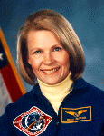

Lyndon B. Johnson Space Center
Houston, Texas 77058
|
National Aeronautics and Space Administration Lyndon B. Johnson Space Center Houston, Texas 77058 |
 |
Biographical Data |
||
Margaret Rhea Seddon (M.D.)
NASA Astronaut (former)
PERSONAL DATA: Born November 8, 1947, in Murfreesboro, Tennessee. Married to Former Astronaut Robert L. Gibson of Cooperstown, New York. Three children. Her father, Mr. Edward C. Seddon, resides in Murfreesboro. Her mother, Mrs. Clayton Dann Seddon, is deceased. His mother, Mrs. Paul A. Gibson, resides in Seal Beach, California.
EDUCATION: Graduated from Central High School in Murfreesboro, Tennessee, in 1965; received a bachelor of arts degree in physiology from the University of California, Berkeley, in 1970, and a doctorate of medicine from the University of Tennessee College of Medicine in 1973.
EXPERIENCE: After medical school, Dr. Seddon completed a surgical internship and 3 years of a general surgery residency in Memphis with a particular interest in nutrition in surgery patients. Between the period of her internship and residency, she served as an Emergency Department physician at a number of hospitals in Mississippi and Tennessee, and served in this capacity in the Houston area in her spare time. Dr. Seddon has also performed clinical research into the effects of radiation therapy on nutrition in cancer patients.
NASA EXPERIENCE: Selected as an astronaut candidate by NASA in January 1978, Dr. Seddon became an astronaut in August 1979. Her work at NASA has been in a variety of areas, including Orbiter and payload software, Shuttle Avionics Integration Laboratory, Flight Data File, Shuttle medical kit and checklist, launch and landing rescue helicopter physician, support crew member for STS-6, crew equipment, membership on NASA's Aerospace Medical Advisory Committee, Technical Assistant to the Director of Flight Crew Operations, and crew communicator (CAPCOM) in the Mission Control Center. She was Assistant to the Director of Flight Crew Operations for Shuttle/Mir Payloads. A three-flight veteran with over 722 hours in space, Dr. Seddon was a mission specialist on STS-51D (1985) and STS-40 (1991), and was the payload commander on STS-58 (1993). In September 1996, she was detailed by NASA to Vanderbilt University Medical School in Nashville, Tennessee. She assisted in the preparation of cardiovascular experiments which flew aboard Space Shuttle Columbia on the Neurolab Spacelab flight in April 1998. Dr. Seddon retired from NASA in November 1997. She is now the assistant Chief Medical Officer of the Vanderbilt Medical Group in Nashville, Tennessee.
SPACE FLIGHT EXPERIENCE: STS-51D (Discovery), April 12-19, 1985, was launched from and returned to land at the Kennedy Space Center, Florida. The crew deployed ANIK-C for Telesat of Canada, and Syncom IV-3 for the U.S. Navy. A malfunction in the Syncom spacecraft resulted in the first unscheduled EVA (spacewalk), rendezvous and proximity operations for the Space Shuttle in an attempt to activate the satellite using the Remote Manipulator System. The crew conducted several medical experiments, activated two "Getaway Specials," and filmed experiments with toys in space. In completing her first space flight Dr. Seddon logged 168 hours in space in 109 Earth orbits.
STS-40 (Columbia) Spacelab Life Sciences (SLS-1), June 5-14, 1991, a dedicated space and life sciences mission was launched from the Kennedy Space Center, Florida, and returned to land at Edwards Air Force Base, California. During the nine-day mission the crew performed experiments which explored how humans, animals and cells respond to microgravity and re-adapt to Earth's gravity on return. Other payloads included experiments designed to investigate materials science, plant biology and cosmic radiation, and tests of hardware proposed for the Space Station Freedom Health Maintenance Facility. Mission completed in 146 orbits of the Earth, and logged her an additional 218 hours in space.
STS-58 (Columbia), Spacelab Life Sciences-2, flew October 18 to November 1, 1993. Dr. Seddon was the Payload Commander on this life science research mission which received NASA management recognition as the most successful and efficient Spacelab flown to date. During the fourteen day flight the seven-person crew performed neurovestibular, cardiovascular, cardiopulmonary, metabolic, and musculoskeletal medical experiments on themselves and 48 rats, expanding our knowledge of human and animal physiology both on earth and in space flight. In addition, the crew performed 10 engineering tests aboard the Orbiter Columbia and 9 Extended Duration Orbiter Medical Project experiments. The mission was accomplished in 225 orbits of the Earth in over 336 hours.
NOVEMBER 1998
This is the only version available from NASA. Updates must be sought direct from the above named individual.
{kind=link}